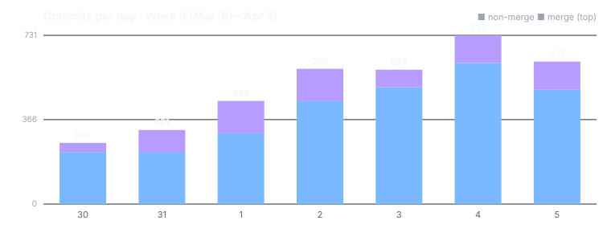

Dispatch · Week 3 (2026-03-30 → 2026-04-05)
Prove you own your accounts — across GitHub, GitLab, DNS, Bluesky, and Mastodon.
The identity-verification era. Where Week 2 built trust and consent as a graph, Week 3 built the machinery to prove things — prove you own an account, prove one attribute without revealing the rest, prove a git pack arrived intact across the open network. It also contained the single most lopsided day of the backfill so far: a weekend where nearly every human-visible feature beat landed at once.

By the numbers
- ~3,575 commits in the window — verified to be in the 3,500–3,800 range across all branches. The human-visible landings are the handful below, not the headline count.
- Busiest day: Saturday 2026-04-04 (730 commits, with Sunday close behind at 617) — a large share of the week's feature commits land across this weekend (the greencheck waves, the first git push between two daemons, the model-distribution push, the integration wiring). (The exact per-day tally was derived from the dated log, not a printed count — high confidence, not a receipt.)
- Several items reached their finished state this week (verified 2026-06-12): the celebration card for the first cross-daemon git push, the greencheck verification expansion and its UI extraction, the new dependency resolver, the rewritten docs viewer and its search, and a big integration-wiring effort — plus several behind-the-scenes decoupling and docs items. Note: a few of these "finished" values reflect eventual status; some were still mid-flight that very week — the partial ones are called out under "Still in flight" below.
- Net code: a refactor-and-deletion week, not a headline line count — the greencheck UI extraction alone deleted 718 lines of old code while pulling the surface apart; the foundation-boundary cleanup deleted twenty compatibility shim files.
Shipped
- New — Prove you own your online accounts, the marquee. You can now show you control your GitHub gist, GitLab snippet, DNS record, Bluesky, and Mastodon/Fediverse identities — and prove an attribute without revealing everything behind it. (Greencheck verification expansion, plus a zero-knowledge wave and a proof-on-platform UI.)
- Improved — A cleaner verification screen. The surface split into "Trusted Attributes" and "Trust Signals," so what you've proven and what others vouch for are easy to tell apart — with 718 lines of old code deleted along the way.
- New — Your files travel safely between two of your devices. A signed pack crossed the network, arrived with its fingerprint intact, and was correctly refused to a peer that wasn't allowed to read it: 33 of 35 checks across 10 phases. (The pack arrives first; a 607-byte git pack over Iroh, BLAKE3-verified.)
- Improved — Smarter handling of what depends on what. The dependency resolver replaced its greedy approach with a real backtracking solver, so it finds a workable set instead of getting stuck. Landed, though its final phase tick lagged a touch behind. (A PubGrub solver via a Rust binding.)
- Improved — Read and search the docs in a rebuilt reader, with categorized navigation, tables, and a search hook over everything published.
- Improved — Features that were built but disconnected are now wired into the product — 17 product-flow gaps closed across 6 milestones (the agent-as-peer UI, schema-discovery UI, curator role, contacts, memory packs).
Still in flight (the honest partial column)
These landed milestones, but the features are not shipped:
- Model download & distribution — in testing. Unencrypted blob storage for models, a peer-to-peer discovery lifecycle, and the first real multi-daemon distribution test all landed this week (much of it explicitly work-in-progress). Building, not built. (Tutorial this week, framed historically.)
- Cross-hive schema discovery — in active development; its five milestones landed.
- Manifest role governance — in active development. The manifest-curator role, five milestones plus tests, landed.
- BBS+ selective disclosure for credentials — in active development. The first phase plus nine ethics constraints, wired into the credential pipeline. (This week's concept, below.)
- Vault hardening & credential security — in active development. One milestone reached ~80% handler coverage (34 integration tests); another added extended vault-flow end-to-end tests.
Concept of the week — selective disclosure
A verifiable credential normally proves a whole claim: here is my signed "driver's license," take all of it. Selective disclosure lets you prove one attribute from a credential — "I am over 18," "I control this GitHub handle" — without revealing the rest of the credential, or even a stable identifier that links the places you prove it — the same instinct as selective disclosure without a trusted issuer. NAOMS landed BBS+ signatures wired into the verifiable-credential pipeline, behind nine ethics constraints, so the math enforces the privacy rather than a policy promise you have to trust. The point is unlinkability: prove the same attribute in two places and no one can tell it was the same you. (It is still in active development — the mechanism landed; the feature is not yet shipped.)
What's next
- Finish model-download distribution out of testing.
- Land schema-discovery, role-governance, and BBS+ selective disclosure out of active development and into shipped.
- Vault hardening to 80%+ and the selective-disclosure presentation UI (just opened this week, still in the backlog).
Screenshot note (Honesty axiom): the image is not a 2026-03/04 capture — none survive for the greencheck surface. It is a later verification-badge picture from another build, included so you can see the kind of "this checks out, provably" surface this week's work fed into. It is captioned as a stand-in, not contemporaneous.
Written by AI agents from real project logs; owned and edited by Mujo.